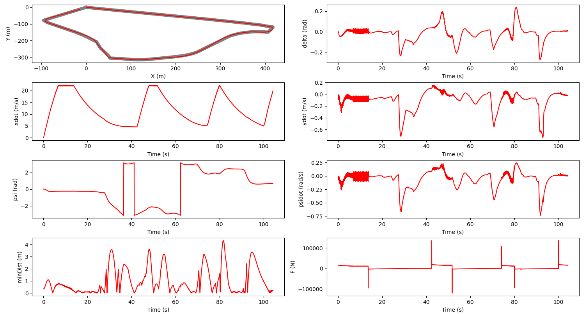
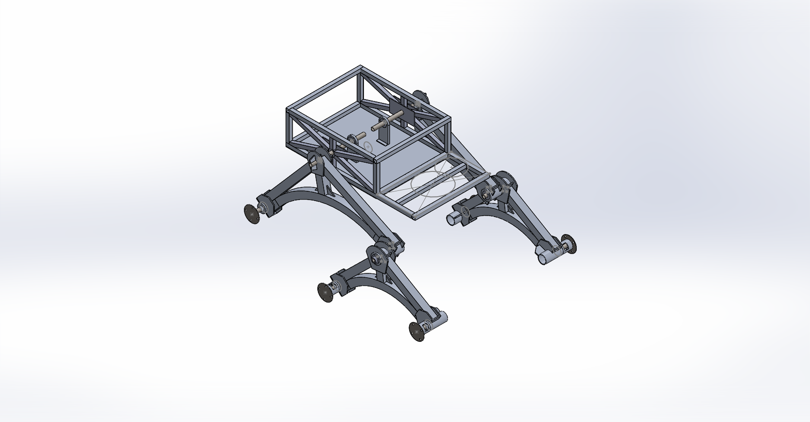
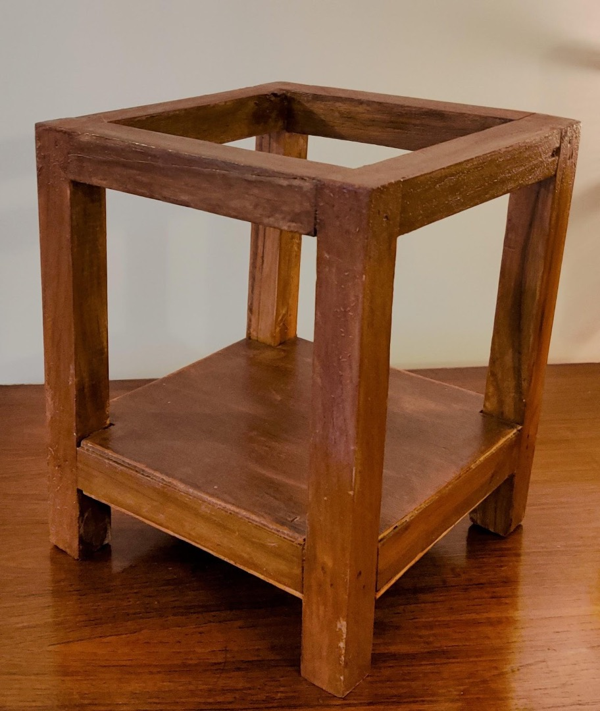

Construction Site Hazard Detection using Computer Vision
The number of fatal injuries on active construction sites has risen by nearly 90 percent in the last three years and our company
is not immune. The four most common workplace hazards are falls, electrocutions, struck by and caught by accidents that constitute
over 60 percent of such injuries. This project provides a solution that aims to improve worker awareness and company profits by
reliably notifying workers of their proximity to potential hazards and active machinery. For our project we would like to develop
a system that combines image processing and point-cloud based computer vision methods in order to track the movement of workers
around the construction site and warn them of entering potentially dangerous regions. We would target the most common construction
site hazards, namely: workers falling and being struck by objects. With this technology, our company will be able to easily identify
the hazardous areas on our construction sites and prevent some of the most fatal accidents that we see every year.
For the design of the project, Our method is composed of 5 main steps. The first is to preprocess our worksite by selecting four fixed
points in the cameras field of view. This allows us account for the unique perspective of our camera and generate the respective
transformation matrix. Next, we read our video stream, and divide it into individual frames that You only look once (YOLO) can process.
Applying YOLO allows us to identify workers in each image, and using the outputted bounding box, we can map worker positions using our
previously defined transformation. Finally, we generate a map of worker positions for each frame and stitch that back together to form
an output video.
Given a video stream of our worksite, we need a way to map worker positions in the image, to worker positions in space. To do this we
rely on the fact that the camera’s position on the construction site is fixed and given 4 known positions we can generate a transformation
that maps pixel values to world coordinate values. This works because we assume all of the workers are on the same plane, implying that
their height is the same all times. So as you can see above, x, y are world coordinates and u and v are pixel coordinates.
After that we run YOLO on each of our frames, were given the pixels value for the center of the bounding box, and its dimensions. By
averaging the bottom of our bounding box, we can find a pixel representation of each worker’s position in each frame. We transform those
pixel values into world coordinates, using the matrix we found earlier. To generate our output video, we scale our world coordinate
positions by the size our output frame and boundary. We then stitch together each frame to create an animation. With our predefined
areas, we can accurately classify workers in danger areas.
The project was able to successfully track the location of the workers and plot their location on the bird-eyes view. We were able
to track multiple bodies simultaneously and track their locations accurately. This was achieved with the use of just one camera.
Path planning and control strategies for an autonomous buggy
Each year there is a new company that is working on creating a new autonomous car that will be
able to operate without the input of humans. This current market share of this is $ 22.22 Billion
(2021) and is expected to increase to $75.95 Billion (2027). All major tech companies like Google,
Apple, Tesla and Microsoft are working on autonomous cars spending Billions on it. This is clearly
the future and this project hopes to tap into a small part of autonomous cars. This project works
on creating a simulation of an autonomous buggy going around the track (CMU's Buggy Track) in the
most optimal path possible, with the use of a lateral and longitudinal controller.
The design of the project was done using Webots as a simulator with a help of a tractor to indicate
the buggy that is moving. For the design of the controller I used a bicycle model for the study of
the vehicle dynamics. The controller was two part, Longitudinal and Lateral. The longitudinal
controller is based GPS coordinates of the track and the acceleration is calculated based on the
closest node. This was done with the information of the track layout, with the buggy accelerating
in straight parts of the track and the buggy slowing down in the turns. The lateral controller on
the other hand was based on 5 different iterations:
- PID Controller
- State Feedback Controller
- LQR Controller
- MPC Controller
- EKF SLAM
To evaluate the performance of the simulation model, I tested the model on the buggy track
around CMU, and evaluated the time to complete the track and the deviation from the main path.
The model was able to complete the track in less than 120 seconds and had an average deviation
less than 3 meters from the optimal track path. This proved to work substantially better than the
real world buggy that are raced every year around CMU.
This project was successfully able to design a controller for a tractor to autonomously complete
the buggy track around CMU in a time of less than 120 seconds and have a minimum deviation of less
than 3 meters. It was able to implement different iterations of the lateral controller to clear the
performance evaluations.

Mars Rover - Astra Robotics
Space travel is going through a revolution for the first time since the space race in 60s. There is a
large push towards travel to mars with companies like NASA, SpaceX and ISRO sending satellites and rockets
to Mars. NASA launched 5 rovers to Mars with the latest Perseverance and Curiosity costing $2.4 Billion
and $2.5 Billion respectively. The research on Mars Rovers is at all time high right now. This project
works on designing a Mars Rover to autonomously traverse a rugged terrain and complete tasks.
The project started with doing literature survey on the existing rover designs to understand the current
design and models. This was followed by designing the rover’s different components:
- Chassis
- Arm
- Wheel
- Rocker Bogie Mechanism
Chassis -
The chassis of the rover was inspired by the Curiosity rover by NASA. It was tasked with housing
the internal computers, electronics and batteries. The chassis is tasked to keep the internal
components safe when traversing the rugged terrain. It is made out of aluminum 6000 series to
get a high strength for low weight.

Arm -
The arm is a 6 Degree of Freedom (DOF) manipulatable arm that is attached to the body. This is
used to control the control panel autonomously and also lift weights up to 5 Kgs. The arm is fitted
a gripper as the end effector to navigate the keyboard and lift objects.
Wheel -
The wheel is designed based on the honeycomb structure to have the best weight distribution without
failure. The wheels designed to be able withstand the wear and tear of the rugged terrain and the
load of the rover
Rocker Bogie Mechanism -
The rover to remain stable and not fail when subjected to harsh environments, requires a differential
to distribute the load applied on the rover. The rover employs a rocker bogie mechanism in the
structures that connect the wheels to the chassis. This helps reducing the shock on the body, by
acting like a suspension to dampen the impact on the rover. The bar differential in the rover is used
to transfer the shock passing through the body to a stable part of the rover, so that it does not
affect delicate parts.
This project was evaluated in the field in a number of various test, during the India Rover Challenge
that we took part in. The rover was able to successfully make it past many hurdles and survive the
extreme conditions it was subjected to.
The project was successfully able to create a Mars Rover to be able to test in rugged terrain and
survive. It implemented many successful components in it that are inspired by the Mars Rovers made
by NASA.
Nitinol Shape Memory Alloy Actuator for Satellite Solar Panel Deployment
The global CubeSat market is projected to grow from USD 152 million in 2018 to USD 375 million by
2023, at a CAGR of 19.87% from 2018 to 2023. Having initially been developed as educational tools,
CubeSats are increasingly being put to active use in orbit for technology demonstration, scientific
studies, and even commercial purposes. And just like typical satellites, they are custom built to
fulfill the specific requirements of their mission. CubeSats are now commonly used in low Earth orbit
for applications such as remote sensing and communications. Nitinol wires were used for the shape
memory alloy actuation system. Shape Memory Alloys exhibit a property called Shape Memory Effect.
The shape memory effect (SME) is a phenomenon, in which a material recovers to its original size and
shape when heated above a certain characteristic transformation temperature. This project is to design
a nitinol based actuator for the deployment of solar panels in CubSats.
The design of the model started with selection of the actuator. We tried and tested many different
types of actuator, such as electric and hydraulic. These were eliminated due to the low power output,
but high mass. Finally, we settled on the nitinol actuator to be used in the solar panels. Following
this, we worked on designing the actuator and the housing on the satellite. As CubSats are smaller
in size compared to regular satellites, the housing had to placed in a way that does not take too
much space on the inside, but also have a large enough range of motion. Once the design was finalized,
the prototyping started. We started by training the nitinol wire to return back to the desired shape.
This was done by heating the wire to high temperatures and then quenching it. A model of a CubSat was
made with wood and the nitinol was controlled using an Arduino board. The entire setup was made to
move a solar panel on command from a user.

The prototype was tested in different conditions and made to work with different types of solar
panels. The model tested well in the all the tests and was able to generate the required torque to
actuate the panel, while using significantly less energy compared the other types of actuators present.
This project was successful in creating an actuator for the solar panels in a CubSat. The nitinol
actuator was able to generate enough torque to move the panel, while at the same time, being lighter
and consume lesser energy than the conventional actuators.